别等身体亮红灯！百年春自体干细胞，为您定制细胞级抗衰防线
2026-03-04

About Us
关于百年春
骨及软骨组织损伤疾病的修复和治疗是再生医学领域的重点之一，包括股骨头坏死、退行性骨关节炎、半月板损伤等难于治疗和恢复的疾病。而半月板损伤不再是老年人的专属，过度运动和不良的运动方式使得二三十岁的年轻人成为了主要人群，尤其是像运动员都是高发人群。
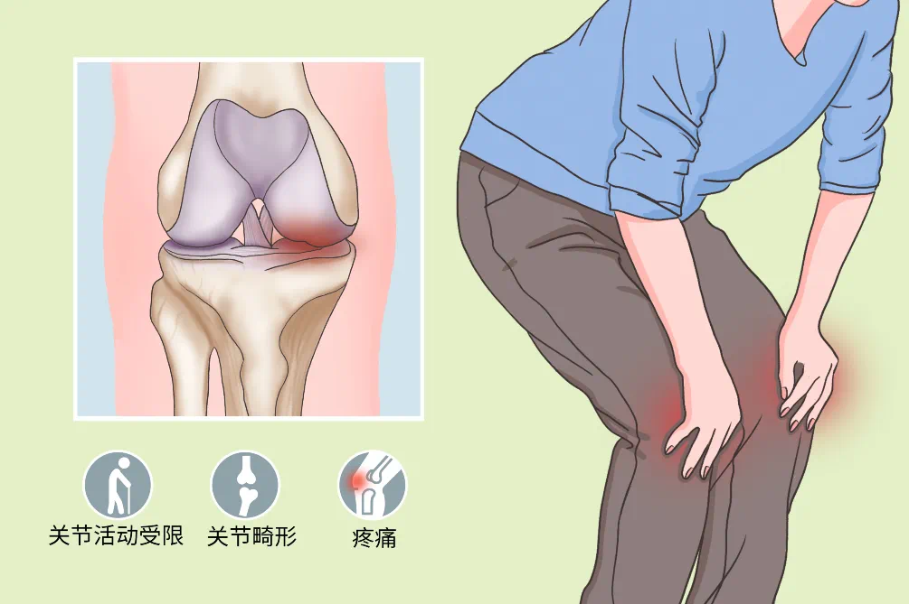
传统方法干预半月板损伤有副反应 干细胞疗法干预半月板损伤四种机制 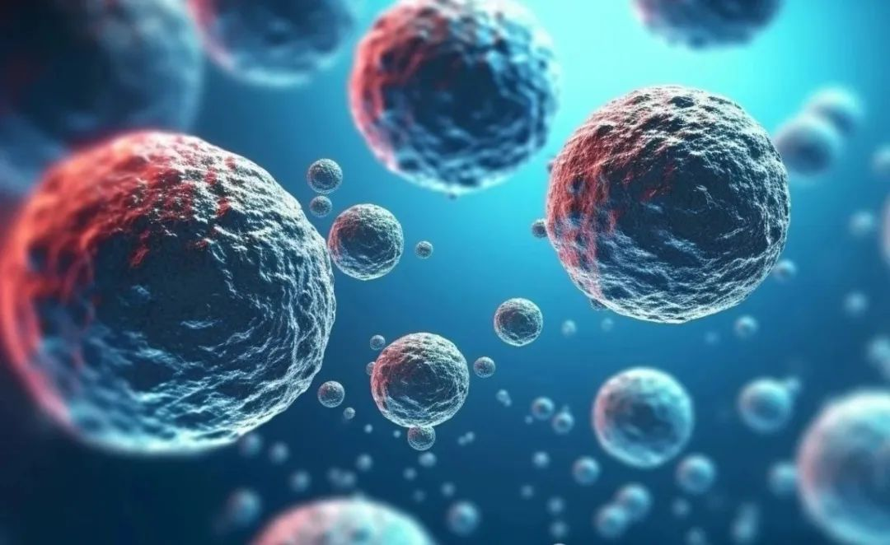 干细胞疗法干预半月板损伤临床效果显著 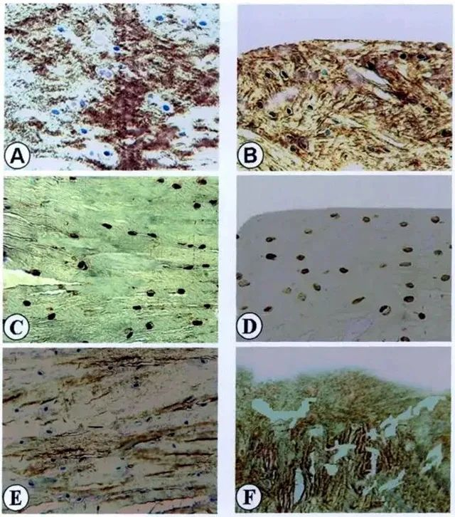 A、C，E为红-红区修复组织，B、D、F为白-白区修复组织；A、B为修复组织II型胶原表达，C、D为修复组织S-100蛋白表达；E、F为修复组织I型胶原表达。 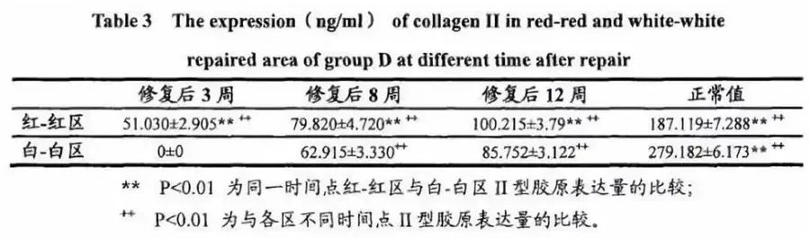 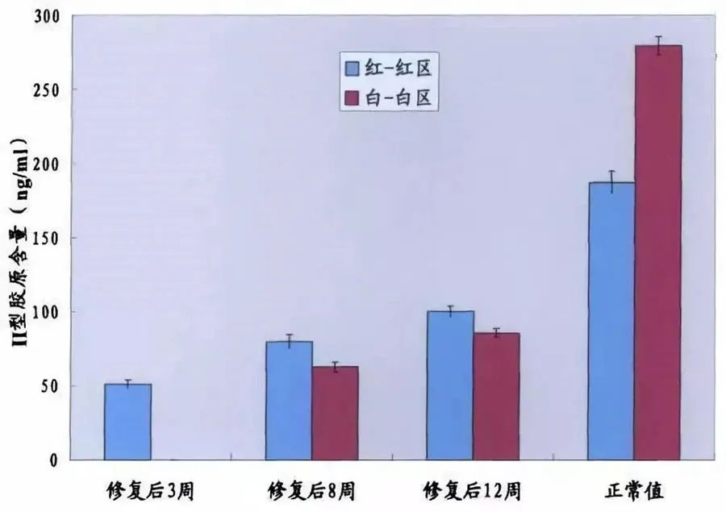 不同时间点修复组织红-红区与白-白区II型胶原表达量 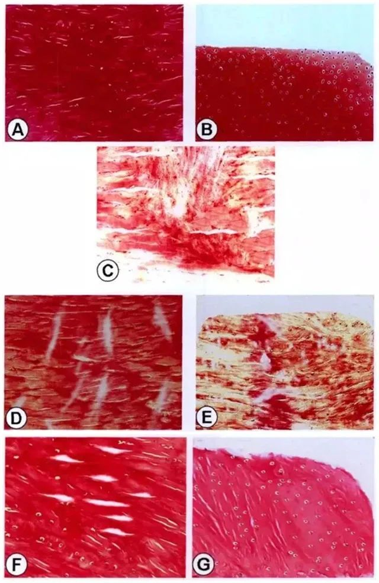 A、C，D、F为红-红区修复组织，B、E、G为白-白区修复组织；A、B为正常半月板 Safranin-0染色结果，C为修复后3周时的修复组织；D、E为修复后8周时的修复组织；F、G为修复后12周时修复组织。 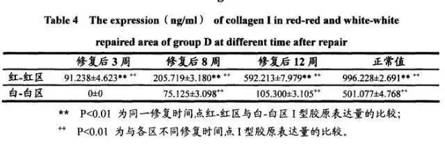 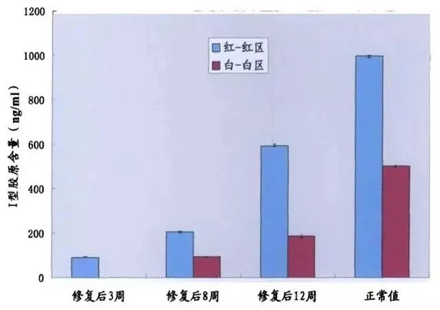 不同时间点修复组织红-红区与白-白区I型胶原表达量 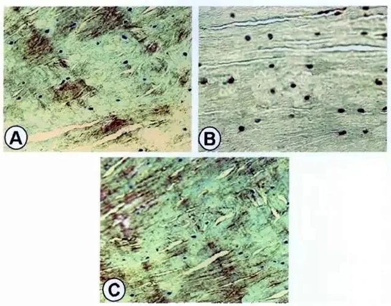 A为红-红区修复组织II型胶原的表达；B为红-红区修复组织S-100蛋白表达；C为红-红区修复组织I型胶原表达。 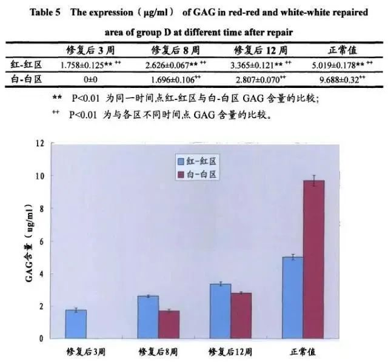 不同时间点修复组织红-红区与白-白区GAG原表达量 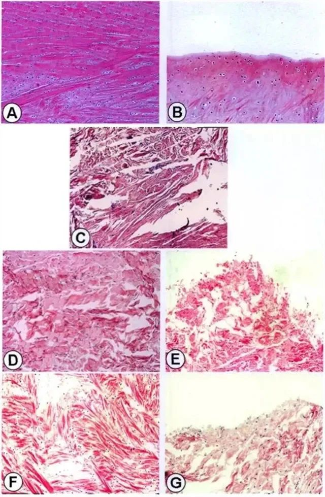